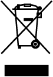
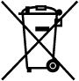
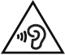

IC RecorderICD-PX333/PX333F
Safety regulations
WARNING
Do not expose the batteries (battery pack or batteries installed) to excessive heat such as sunshine, fire or the like for a long time.
CAUTION
Risk of explosion if battery is replaced by an incorrect type. Dispose of used batteries according to the instructions.
- The recorded music is limited to private use only. Use of the music beyond this limit requires permission of the copyright holders.
- Sony is not responsible for incomplete recording/downloading or damaged data due to problems of the IC recorder or computer.
- Depending on the types of the text and characters, the text shown on the IC recorder may not be displayed properly on device. This is due to:
- The capacity of the connected IC recorder.
- The IC recorder is not functioning normally.
- Content information is written in the language or the character that is not supported by the IC recorder.
Disposal of Old Electrical & Electronic Equipment (Applicable in the European Union and other European countries with separate collection systems)

This symbol on the product or on its packaging indicates that this product shall not be treated as household waste. Instead it shall be handed over to the applicable collection point for the recycling of electrical and electronic equipment.
By ensuring this product is disposed of correctly, you will help prevent potential negative consequences for the environment and human health, which could otherwise be caused by inappropriate waste handling of this product. The recycling of materials will help to conserve natural resources. For more detailed information about recycling of this product, please contact your local Civic Office, your household waste disposal service or the shop where you purchased the product.
Applicable accessory: stereo microphone with shirt-clip
Disposal of waste batteries (applicable in the European Union and other European countries with separate collection systems)

This symbol on the battery or on the packaging indicates that the battery provided with this product shall not be treated as household waste.
On certain batteries this symbol might be used in combination with a chemical symbol. The chemical symbols for mercury (Hg) or lead (Pb) are added if the battery contains more than 0.0005% mercury or 0.004% lead.
By ensuring these batteries are disposed of correctly, you will help prevent potentially negative consequences for the environment and human health which could otherwise be caused by inappropriate waste handling of the battery. The recycling of the materials will help to conserve natural resources.
In case of products that for safety, performance or data integrity reasons require a permanent connection with an incorporated battery, this battery should be replaced by qualified service staff only.
To ensure that the battery will be treated properly, hand over the product at end-of-life to the applicable collection point for the recycling of electrical and electronic equipment.
For all other batteries, please view the section on how to remove the battery from the product safely. Hand the battery over to the applicable collection point for the recycling of waste batteries.
For more detailed information about recycling of this product or battery, please contact your local Civic Office, your household waste disposal service or the shop where you purchased the product.
Notice for the customers: the following information is only applicable to equipment sold in the countries applying EU directives
This product has been manufactured by or on behalf of Sony Corporation, 1-7-1 Konan Minato-ku Tokyo, 108-0075 Japan.
Inquiries related to product compliance based on European Union legislation shall be addressed to the authorized representative, Sony Deutschland GmbH, Hedelfinger Strasse 61, 70327 Stuttgart, Germany.
For any service or guarantee matters, please refer to the addresses provided in the separate service or guarantee documents.
To prevent possible hearing damage, do not listen at high volume levels for long periods.
